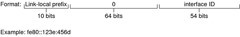

Previous
Previous
Interface ID
The interface ID identifies an interface of a particular node. An interface ID must be unique within the subnet. IPv6 hosts can use the Neighbor Discovery protocol to automatically generate their own interface IDs. Neighbor Discovery automatically generates the interface ID, based on the MAC or EUI-64 address of the host's interface. You can also manually assign interface IDs, which is recommended for IPv6 routers and IPv6-enabled servers. For instructions on how to create a manual EUI-64 address, refer to RFC 3513 Internet Protocol Version 6 (IPv6) Addressing Architecture.
Transitional Global Unicast Addresses
For transition purposes, the IPv6 protocol includes the ability to embed an IPv4 address within an IPv6 address. This type of IPv4 address facilitates the tunneling of IPv6 packets over existing IPv4 networks. One example of a transitional global unicast address is the 6to4 address. For more information on 6to4 addressing, refer to 6to4 Automatic Tunnels.
Link-Local Unicast Address
The link-local unicast address can be used only on the local network link. Link-local addresses are not valid nor recognized outside the enterprise. The following example shows the format of the link-local address.
Example 3-1 Parts of the Link-Local Unicast Address
A link-local prefix has the following format:
fe80::interface-ID/10
The following is an example of a link-local address:
fe80::23a1:b152
fe80 | Hexadecimal representation of the 10-bit binary prefix 1111111010. This prefix identifies the type of IPv6 address as link local. |
interface-ID | Hexadecimal address of the interface, which is usually derived from the 48-bit MAC address. |
When you enable IPv6 during Solaris installation, the lowest numbered interface on the local machine is configured with a link-local address. Each interface requires at least one link-local address to identify the node to other nodes on the local link. Therefore, you need to manually configure link-local addresses for additional interfaces of a node. After configuration, the node uses its link-local addresses for automatic address configuration and neighbor discovery.
Multicast Addresses
IPv6 supports the use of multicast addresses. The multicast address identifies a multicast group, which is a group of interfaces, usually on different nodes. An interface can belong to any number of multicast groups. If the first 16 bits of an IPv6 address is ff00n, the address is a multicast address.
Multicast addresses are used for sending information or services to all interfaces that are defined as members of the multicast group. For example, one use of multicast addresses is to communicate with all IPv6 nodes on the local link.
When an interface's IPv6 unicast address is created, the kernel automatically makes the interface a member of certain multicast groups. For example, the kernel makes each node a member of the Solicited Node multicast group, which is used by the Neighbor Discovery protocol to detect reachability. The kernel also automatically makes a node a member of the All-Nodes or All Routers multicast groups.
For detailed information about multicast addresses, refer to IPv6 Multicast Addresses in Depth. For technical information, see RFC 3306, Unicast-Prefix-based IPv6 Multicast Addresses, which explains the multicast address format. For more information about the proper use of multicast addresses and groups, RFC 3307, Allocation Guidelines for IPv6 Multicast Addresses.
Anycast Addresses and Groups
IPv6 anycast addresses identify a group of interfaces on different IPv6 nodes. Each group of interfaces is known as an anycast group. When a packet is sent to the anycast address, the anycast group member that is physically closest to the sender receives the packet.
Note - The Solaris Operating System (Solaris OS) implementation of IPv6 does not support the creation of anycast addresses and groups. However, Solaris IPv6 nodes can send packets to anycast addresses. For more information, see Considerations for Tunnels to a 6to4 Relay Router.
IPv6 Neighbor Discovery Protocol Overview
IPv6 introduces the Neighbor Discovery protocol, which uses messaging as the means to handle the interaction between neighbor nodes. Neighbor nodes are IPv6 nodes that are on the same link. For example, by issuing neighbor discovery-related messages, a node can learn a neighbor's link-local address. Neighbor Discovery controls the following major activities on the IPv6 local link:
Router discovery - Aids hosts in locating routers on the local link.
Address autoconfiguration - Enables a node to automatically configure IPv6 addresses for its interfaces.
Prefix discovery - Enables nodes to discover the known subnet prefixes that have been allocated to a link. Nodes use prefixes to distinguish destinations that are on the local link from those destinations that are only reachable through a router.
Address resolution - Helps nodes to determine the link-local address of a neighbor, given only the destinations's IP address.
Next-hop determination - Uses an algorithm to determine the IP address of a packet recipient one hop that is beyond the local link. The next-hop can be a router or the destination node.
Neighbor unreachability detection - Aids nodes to determine if a neighbor is no longer reachable. For both routers and hosts, address resolution can be repeated.
Duplicate address detection - Enables a node to determine if an address that the node wants to use is not already in use.
Redirection - Enables a router to inform a host of a better first-hop node to use to reach a particular destination.
Neighbor Discovery uses the following ICMP message types for communication among nodes on a link:
Router solicitation
Router advertisement
Neighbor solicitation
Neighbor advertisement
Redirection
For detailed information on Neighbor Discovery messages and other Neighbor Discovery protocol topics, refer to IPv6 Neighbor Discovery Protocol. For technical information on Neighbor Discovery, see RFC 2461, Neighbor Discovery for IP Version 6 (IPv6).
IPv6 Address Autoconfiguration
A major feature of IPv6 is a host's ability to autoconfigure an interface. Through Neighbor Discovery, the host locates an IPv6 router on the local link and requests a site prefix. The host does the following, as part of the autoconfiguration process:
Creates a link-local address for each interface, which does not require a router on the link.
Verifies the address's uniqueness on a link, which does not require a router on the link.
Determines if the global addresses should be obtained through the stateless mechanism, the stateful mechanism, or both mechanisms. (Requires a router on the link.)
Note - Stateful autoconfiguration is achieved through DHCPv6. DHCPv6 is not supported in the current Solaris release.